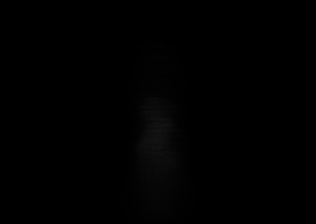
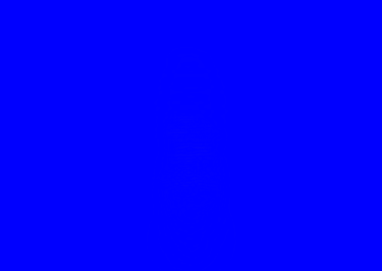
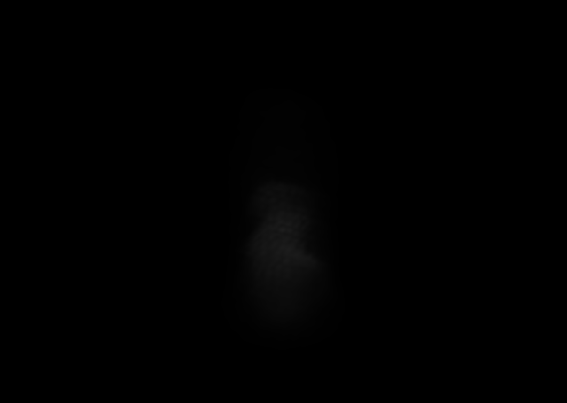

Recorded Native
Pre-absorption dense ray integral

Diagonal covariance per rigid block

Full covariance, same blocks/count/mass

Absolute luma difference

Question: is R1's discarded cross-covariance/orientation a material cause of its block bands and missing tongue topology?
Controlled change: same R160 step 45, pre-absorption body carrier, frozen 1,024 control, 49,536 rigid 4x4x4 residual blocks, weighted centroids, masses, count, cameras, extinction scale 0.2, coverage 1, and display-only exposure 8x. R1 uses diagonal covariance; R2 retains all residual-weighted second moments and serializes the full eigenbasis.
Initial metric: R2 changes combined MSE by -0.71% native and -0.28% elevated; IoU is effectively unchanged. This sheet decides whether a qualitative topology delta exists despite the small scalar movement.




